長期キャリアの形成を図るため、20代の方に特化したサービスとなっております。20代の方であれば、どなたでもご利用頂けます。

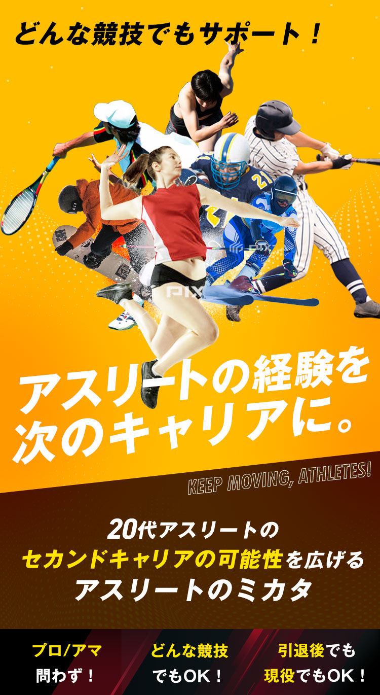
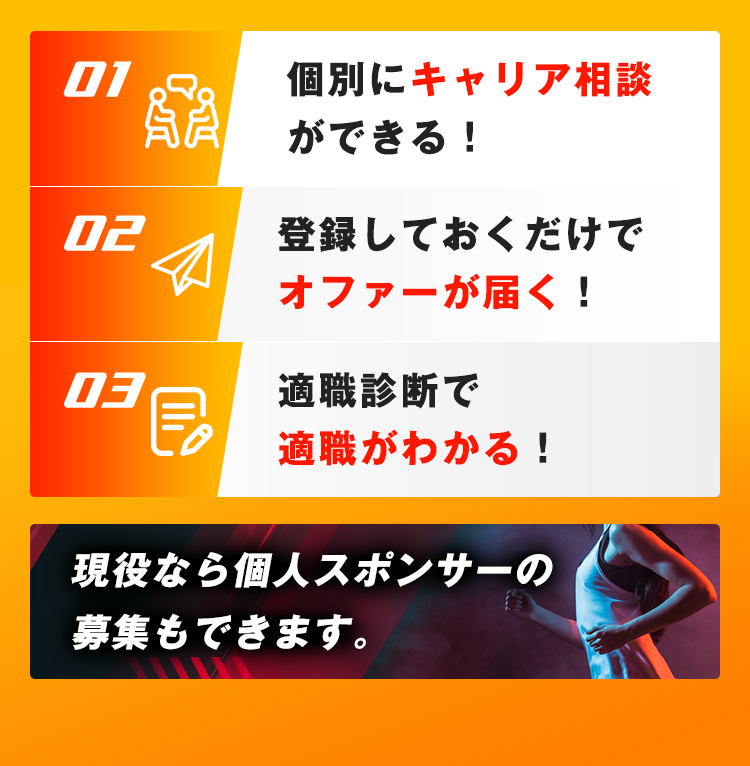
-
オリンピックでの
全競技種目はもちろん、
400種類以上あると言われる
すべての競技経験者が対象です。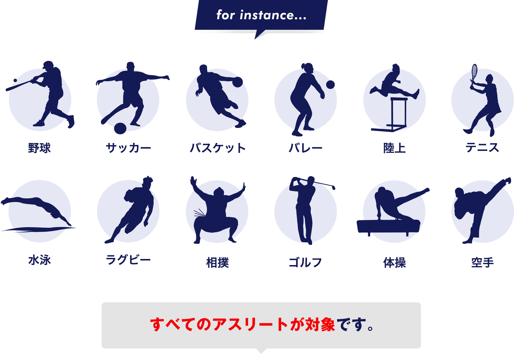
-
- 【あ行】
- 合気道、アイスホッケー、アクアダンス（アクアビクス）、アメリカンフットボール、アーチェリー、アームレスリング、居合道、一輪車、インディアカ、ウィンドサーフィン、ウェーブスキー、ウエイトトレーニング、ウエイトリフティング（重量挙げ）、ウォークラリー、ウォールハンドボール、ウオーキング、エアロスイミング 、エアロビック、エアースポーツシューティング、エスキーテニス、オズタグ、オリエンテーリング、オーケーゴルフ、オーストラリアンフットボール、オートキャンプ
- 【か行】
- カヌー、カバディ、空手道、カンガクリケット、カーリング、気球、気功、キックベースボール キックボクシング キャスティング、キャンプ、弓道、クリケット、クロッケー、クロッケーゴルフ、クロリティー、グライダー、グラウンド・ゴルフ、グラススキー、剣道、健美操、ゲートボール、コーフボール、ゴルフ、ゴールボール
- 【さ行】
- サイクリング・自転車、サイクルサッカー、サイクルフィギュア、サッカー、3B体操、サンボ、サーフィン シャトルボール、シャフルボード、シュートボクシング、 少林寺拳法、ショートテニス、ショートトラックスピードスケート、新卓球（ラージボール）、ジェットスポーツ（水上バイク）、自彊術、ジャズ体操、ジャズダンス、柔道、ジョイアスロン、ジョギング・ランニング、水泳、水球、水上スキー、スカイダイビング、スカッシュ、スキー 、スクーバダイビング、スケートボード、ストリートバスケット（3x3）、スノーボード、スノーモビル、スピードスケート、スポーツカイト、スポーツダイビング、 スポーツチャンバラ、スポールブール、相撲、セイルトレーニング、セパタクロー セーリング、ソフトテニス、ソフトバレーボール、ソフトボール、ソングリーディング
- 【た行】
- タスポニー、体操、卓球、タッチフットボール、タッチラグビー、ターゲット・バードゴルフ、ダブルダッチ 、ダンススポーツ、ダーツ、中国拳法、チュックボール、綱引競技、釣り、ティーボール、テニス、デッドボール、デュアスロン、デンマーク体操、トスベースボール、トライアスロン、トランポビクス、トランポリン、トリットボール トレッキング（登山）、ドッジボール、ドラゴンボート
- 【な行】
- なぎなた、ナスターレース、なわとび、ネットボール
- 【は行】
- ハイキング、ハンググライディング、ハンドボール BMX（バイシクルモトクロス） 、バウンドテニス、馬術、バスケットボール、バトントワリング、バドミントン バレーボール、パットパットゴルフ、パドルテニス、パラグライディング、パラシュートスポーツ、パワーリフティング 、パークゴルフ、ビリヤード、ビーチサッカー、ビーチドッジボール、ビーチバレーボール、ビーチフットボール、ビーチボール、ファウストボール、フィギュアスケート、フィンスイミング、フェンシング、フォークダンス フットサル（サッカー）、フットバッグ、フライングディスク、フラッグフットボール、フリスビードッグ、フリークライミング、フリーテニス、フロアホッケー、武術太極拳、ブルームボール、ブーメラン、プンチャック・シラット、ペタンク、ホステリング、ホッケー、ホースシューズ、ボウリング、ボクシング、ボッチャ、ボディビル、ボディボード、ボート、ボール体操、ポロ
- 【ま行】
- マイクロライトプレーン、マウンテンバイク、真向法、マレットゴルフ、モーターサイクル・スポーツ
- 【や行】
- 野球（硬式野球）、野球（軟式野球）、ユニカール ユニホック
- 【ら行】
- ライフセービング、ラクロス、ラグビー、ラケットボール 、陸上競技・マラソン、レスリング、ローラースキー、 ローラースケート/インラインスケート、ローンボウルズ
※こちらに含まれていない競技も対象です。
-
-
プロ・セミプロ・アマチュア
問いません。
あなただけの自慢や輝かしい経験も
一緒に教えてください。わたしのアスリート自慢
- 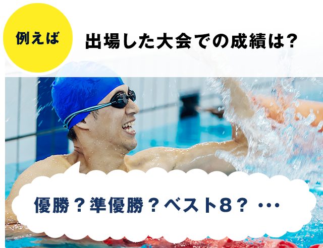
- 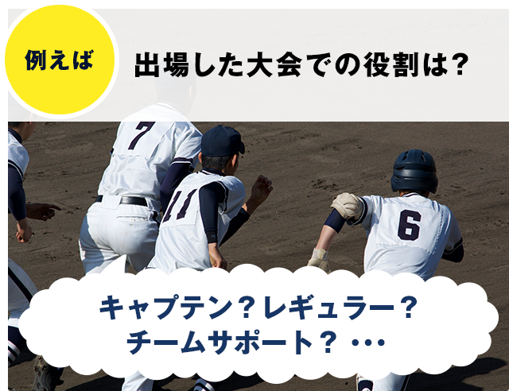
あなたに当てはまる
アスリート自慢に
簡単チェックできます！
-
福井ワイルドラプターズ
球団社長 小松原 鉄平 様現役時からの登録を
勧めています。球団社長という立場で若い選手たちを預かる身として、選手たちの将来のキャリア問題について、片時も頭から離れることはありません。独立リーグは…NPBを目指す選手がほとんどですがドラフト指名や育成指名がかかるのはほんのひと握り。それ以外の選手は様々な形で「次の仕事」を見つけることになります。そんな中「アスリートのミカタ」のような支援サービスがあれば将来への不安を低減し、より目の前の野球に打ち込むことが出来ますので、現役時から登録するよう選手には伝えています。
-
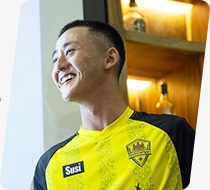
ソルティーロアンコールFC
マネージャー 景山 慎太郎様選手生活を終えた後を
考える必要があります。世界的人気スポーツのサッカーでは、プロ選手を目指し日本を飛び出す若い選手が少なくありません。本田圭佑が実質的オーナであるウチのチームにも…4人の日本人選手が在籍していますが、毎年トライアウトを受けに数多くの若者が日本からやってきます。私は燃え尽きるまで挑戦することには大賛成ですが、同時に選手生活が終わった後のこともしっかりと考えておく必要があると思います。競技生活で身につけた挑戦する姿勢が高く評価される「アスリートのミカタ」は素晴らしいサービスだと思います。
-
元アマチュアサッカー選手
N・Hさん（25歳）男性アドバイザーの方と
一緒に頑張ります。幼少期からサッカー一筋で、23歳くらいから、今までずっとサッカーしかしていないことに危機感を覚えてきました。そして年齢的にも区切りをつけ…てビジネスの世界に行くことを決意し、就職していくことにしました。今まで様々な繋がりの中でオファーを貰ってきた結果、現在があるので、人とのつながりが大事だと思っています。なので営業職か、もしくは私と同じような境遇の体育学生やアスリートの支援ができるような仕事に就きたいと思っています。就活の進め方はサッパリなのですが、アドバイザーの方を頼りながら就職に向けて頑張っていきたいと思います。
-
元日本一アイスホッケー選手
H・Yさん（23歳）女性「やり遂げる力」を
活かしていきたいです。約20年ほどアイスホッケーを続けて、高校生・大学生の時に日本一になることができました。大学卒業後はプロを目指して海外の試験を受けましたが…失敗。1年間と期間も決めていましたので、就職に向けて活動を開始しました。日本一になることを目標に努力を続けてきた「やり遂げる力」があると思っているので、就活の仕方はわからなくても、私の努力次第でなんとかできる、と信じています。笑 人と接することが好きですし、自分次第で成果が変わる営業職を希望しています。オファーを検討して、自分に合いそうな求人に応募していきたいと思います。
※写真はイメージです。
企業規模や業種を問わず、
新しい出会いをつくります。
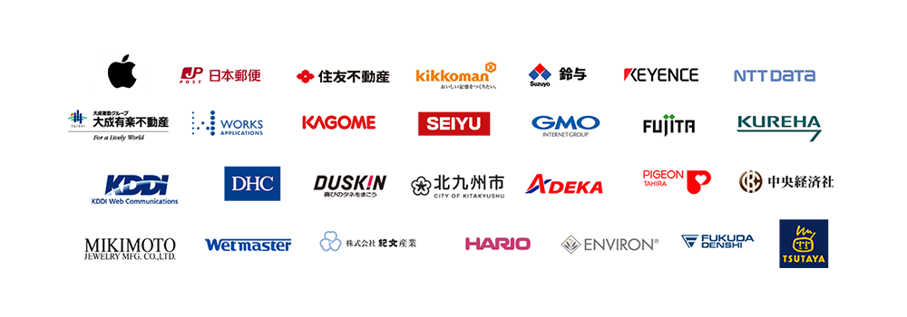
-
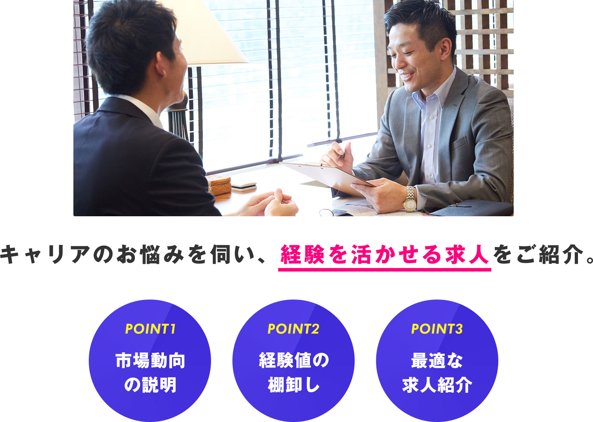
アスリート専門のキャリアアドバイザーが就職・転職活動に関する素朴な疑問から今後のキャリアプランまで、ご希望に合わせてじっくりお話を伺います。
その上で、アスリートとしての経験をどう活かせるのかを一緒に考え、適した求人をご紹介し
ます。-
キャリアアドバイザー
伊藤就活が分からなくても
安心してください。私は今ではアドバイザーとして就活の方法をお伝えしていますが、実は就職する前はプロを目指してサッカーばかりやっていたので、当時は就活なんて全く分かりませんでした。そして、私と同じ状況の方が多いのではないかと思います。ですが「分からないこと」に恥じる必要はありません。
私たちアドバイザーが「ご希望の求人選び」「履歴書の書き方」「面接対策」など、就職決定していくまでのプロセスをトータルでサポートします。「自分に合った職場」への就職を一緒に目指していきましょう。 -
キャリアアドバイザー
奥村ポテンシャル重視の企業
と出会えます。「アスリートのミカタ（および「いい就職ドットコム」）」の求人企業は、学歴やスキルなどよりも人柄やポテンシャルを重視して採用活動をしています。中でもスポーツで身に付く能力は仕事においても役立つ能力ですし、企業も高く評価する傾向にあります。実際、私は今でも野球を続けていますが、チーム内の企業担当者からそういった声をよく聞きます。ポテンシャルを重視する企業からオファーが届くことになりますので、じっくり検討頂いて、思わぬ優良企業との出会いをぜひ掴んで欲しいですね。
-
キャリアアドバイザー
樋口質の高い情報で、
ミスマッスを防ぎます！初めての就職になる方が多いでしょうから、「入社後のミスマッチがないか？」不安に思われる方も多いでしょう。「アスリートのミカタ（および、いい就職ドットコム）」では入社後のミスマッチをなくし、満足のいく就職を実現するため、求人企業に対し取材を行い、「職場の雰囲気」「経営トップの人柄」「仕事の大変さ」などを1つ1つ丁寧にヒアリングしています。
ミスマッチをなくすためなら惜しみなく、質の高い情報をお伝えします。あなたにとっての「いい就職」を一緒に実現していきましょう！
-
-

現在の転職市場においては、
大企業も中小企業も1/2の確率で多くの企業が
人材不足による悩みを抱えています。
その一方で、求める人材像はシビアな状況です。
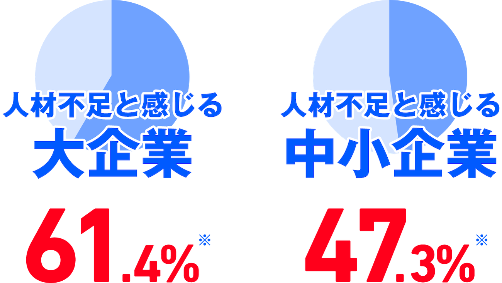
※調査：帝国データバンク調査期間：2019年10月17日～31日、調査対象：全国2万3,731社、有効回答企業数：1万113社
アスリートの
セカンドキャリアのチャンスは
どんどん広がっています。
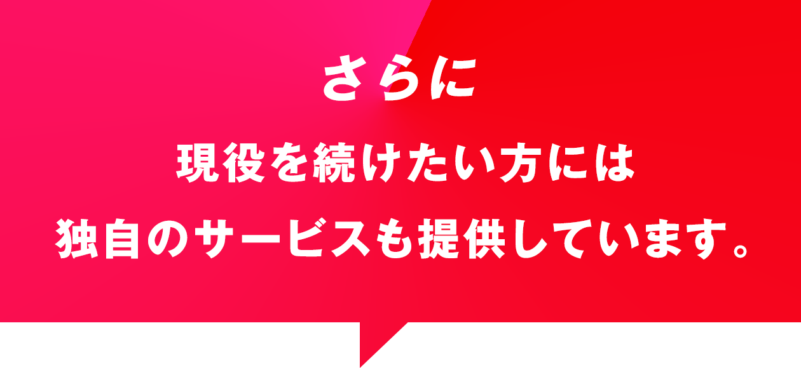
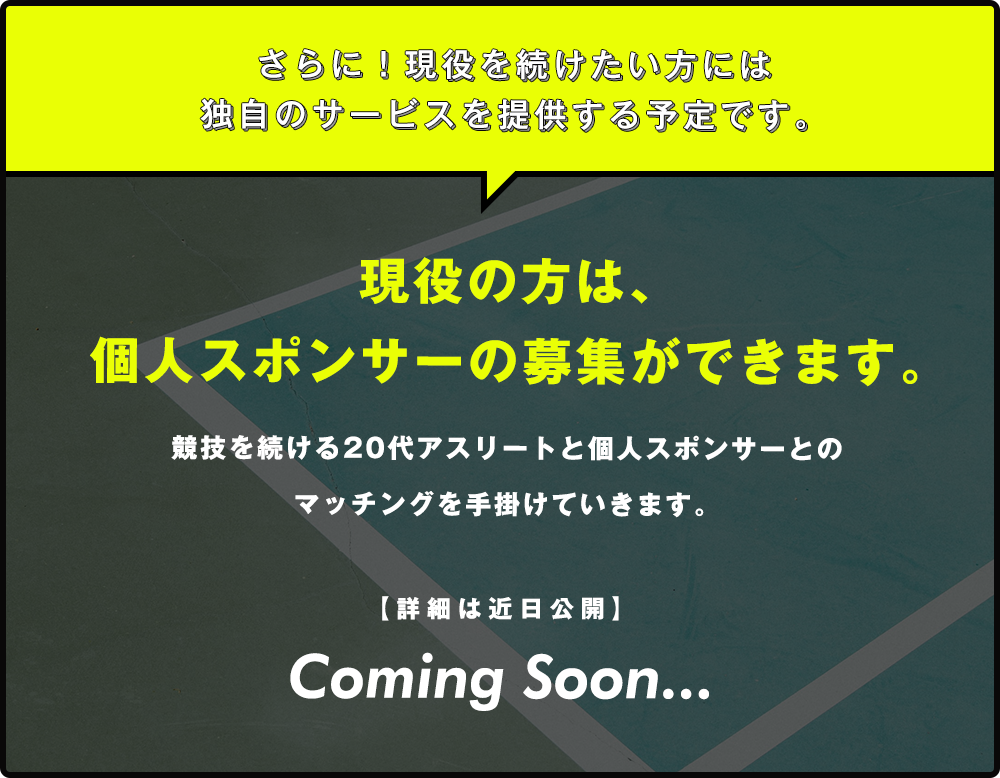
-
まずは会員登録
まずは会員登録から。
ご登録後はご希望のご利用方法からサービスを利用してみましょう。 就職決定まで完全無料でご利用頂けます。 -
各サービスを
利用してみましょうオファーサービスの場合
オファーが届いたら、ご希望に沿って応募するか検討してみましょう。就職・転職サポートサービスの場合
キャリアアドバイザーとの個別面談で、ご希望の条件など詳細をヒアリングさせていただきながら、ご希望の求人をご紹介いたします。 -

選考に進む
ご希望の求人があれば、選考に進みましょう。
応募書類の書き方や、面接の日程調整などは弊社キャリアアドバイザーがサポートいたします。
就職決定へ
年齢制限はありますか？
地方在住で東京・横浜・大阪・
名古屋まで行けないのですが、
メールや電話による企業紹介は
可能ですか？
名古屋まで行けないのですが、
メールや電話による企業紹介は
可能ですか？
はい、可能です。電話・メールだけではなく、Web面談も行っております。書類審査通過後の希望企業の面接選考の場合は、直接企業にご訪問頂く必要がありますが、それまでのステップについては遠隔地にお住いの場合については、電話・メール、Web面談によって転職活動をサポートします。
登録する競技・自慢は
どんな
経験でも問題ないの
でしょうか？
どんな
経験でも問題ないの
でしょうか？
はい、大丈夫です。ご自身の競技経験でNo.1の自慢をご登録頂ければと思います。他にも、誇れる実績がありましたら、備考欄にもご登録ください。
全く就職に関する知識がない
の
ですが、そんな私でも大丈夫
なのでしょうか？
の
ですが、そんな私でも大丈夫
なのでしょうか？
はい、大丈夫です。業界、職種の特長・求人選び・履歴書の書き方・面接対策など、就職決定までをプロのアドバイザーがトータルでサポートさせていただきますので、ご安心ください。
どのような企業を紹介して
頂けるのでしょうか？
頂けるのでしょうか？
業界・職種さまざまな求人がありますので、ご希望に合った求人をご紹介させて頂きます。ご紹介する求人は就職人気企業ランキングに名を連ねるような企業は少ないかもしれませんが、知名度はなくても、社員のことを大切に考える優良企業ばかりです。「会社の将来を背負って立つ若手社員を採用したい！」「過去の経歴に捉われずやる気と成長性を重視する！」人生を大きく左右する就職活動だからこそ、そんな経営者に会ってほしいですね。
いい就職ドットコムに登録し
サービスを受けると、
お金がかかるの？
サービスを受けると、
お金がかかるの？
費用は一切かかりません。全てのサービスを無料でご利用いただけます。
今すぐ就職を考えていなくても
登録できますか？
登録できますか？
はい、ご登録いただけます。
就職活動をするべきか悩んでいる、といった相談なども受け付けております。お気軽にご相談ください。。
内定までどのくらいの
期間
がかかりますか？
期間
がかかりますか？
人により変わってしまいますが、多くの方は最短2週間～3ヵ月ほどで内定を獲得しています。。

- Q. わたしが打ち込んだ競技は？
-
競技種目名：
- Q.わたしが打ち込んだ年数は？
-
競技年数：
- Q.現在のチームまたは団体は？
-
所属：
時期はいつ頃？
時期はいつ頃？